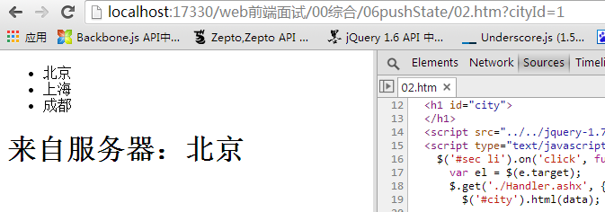
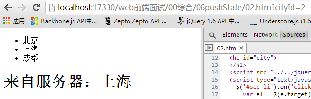
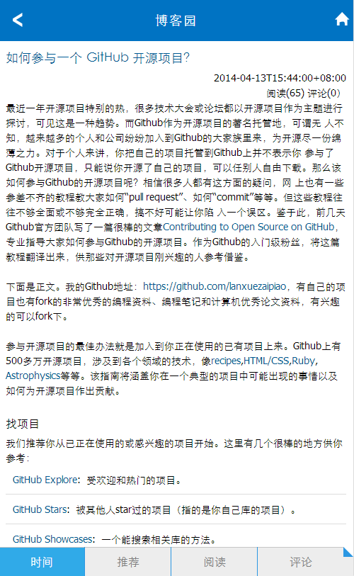
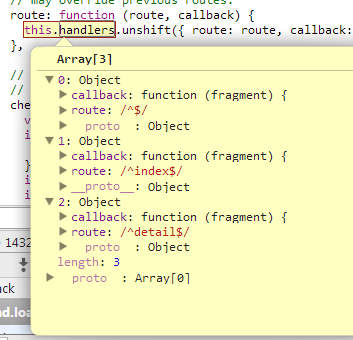
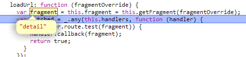
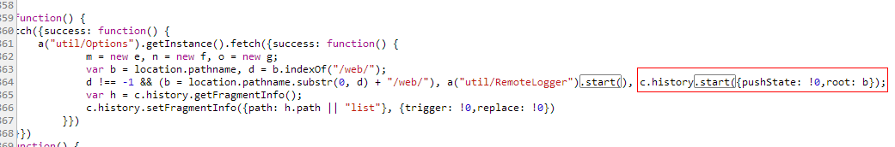

前言
首先发一点牢骚，互联网公司变化就是快，我去一个团队往往就一年时间该团队就得解散，这不，公司居然把无线团队解散了，我只能说，我那个去！！！
我去年还到处让人来呢，一个兴兴向荣的团队说没就没了啊！我找谁哭去......
于是我们团队一个大哥说他去哪哪就解散，我老大说他去哪哪就倒霉，如此看来，不是我们导致团队解散，而是所有的团队变化都快啊。。。。。。
于是换了个团队，近几周情绪较低落啊，但是低落也不能不干实事，所以在此收拾心情明天开始好好干事情吧！
在去年的时候，我们初略的学习了下backbone，一方面是因为期间比较忙，另一方面是因为没有使用backbone开发项目，所以到路由一节就有点断断续续了
于是这个星期正好有空，我们来回看下backbone路由相关的知识点，这里以之前的demo为例
pushState
在介绍backbone路由之前，我们简单说一下pushState，pushState的出现与Ajax有莫大的关系，无刷新操作带来了很多优点，但是也会造成一些问题
这些问题中有两个问题让人比较头疼：
① SEO
② 浏览器后退
SEO不在我们今天的考虑范畴，所以我们来看看让人头疼的浏览器后退问题，这里就不得不提pushState了
pushState的提出便是为了即实现局部刷新，又同时改变浏览器URL，并且很友好的支持浏览器前进后退功能
之前我们为了实现同样的功能会注册hashChange事件，劫持浏览器的跳转，但是这样做不太标准，于是我们来见识一下pushState
window.history.pushState({
title: title,
url: url,
XXX: xxx
}, document.title, url)
与之对应的是popstate事件，该事件会在浏览器前进后退时候触发，他会捕捉当前URL中的data，这里以一个例子说明
首先第一步，为简单Ajax：
<html xmlns="http://www.w3.org/1999/xhtml"> <head> <title></title> </head> <body> <ul id="sec"> <li data-key="1">北京</li> <li data-key="2">上海</li> <li data-key="3">成都</li> </ul> <h1 id="city"> </h1> <script src="../../jquery-1.7.1.js" type="text/javascript"></script> <script type="text/javascript"> $('#sec li').on('click', function (e) { var el = $(e.target); $.get('./Handler.ashx', { id: el.attr('data-key') }, function (data) { $('#city').html(data); var s = ''; }); }); // window.addEventListener("popstate", function (e) { // var s = ''; // }); </script> </body> </html>
对应服务器程序：


public class Handler : IHttpHandler { public void ProcessRequest (HttpContext context) { context.Response.ContentType = "text/plain"; string name = "无名"; string id = "0"; id = context.Request.QueryString["id"]; if (id == "1") name = "北京"; if (id == "2") name = "上海"; if (id == "3") name = "成都"; context.Response.Write(name); } public bool IsReusable { get { return false; } } }
这个时候便是点击一个项目便从服务器取得一个项目显示，这里有两个新需求：
① url需要跟着变
② 可前进后退，于是我们这么修改
1 $('#sec li').on('click', function (e) { 2 var el = $(e.target); 3 $.get('./Handler.ashx', { id: el.attr('data-key') }, function (data) { 4 $('#city').html(data); 5 //新增pushState逻辑 6 var state = {}; 7 state.title = data; 8 document.title = data; 9 history.pushState(state, data, location.href.split("?")[0] + '?cityId=' + el.attr('data-key')); 10 var s = ''; 11 }); 12 });
这个时候每次点击URL就会跟着改变了，但是并不会跳转哦

最后加上前进后退逻辑
1 $('#sec li').on('click', function (e) { 2 var el = $(e.target); 3 $.get('./Handler.ashx', { id: el.attr('data-key') }, function (data) { 4 $('#city').html(data); 5 //新增pushState逻辑 6 var state = {}; 7 state.title = data; 8 document.title = data; 9 history.pushState(state, data, location.href.split("?")[0] + '?cityId=' + el.attr('data-key')); 10 var s = ''; 11 }); 12 }); 13 window.addEventListener("popstate", function (e) { 14 var state = history.state;//e.state 15 document.title = state.title; 16 $('#city').html(state.title); 17 var s = ''; 18 });
如此便能简单达到目的，对于其讲解暂时到此，为什么这里会提到pushState呢，因为在单页应用中，路由的处理是一个问题，而pushState是个很好的处理方案
但不是没有问题的，pushState只支持IE10，所以意味着直接抛弃了winphone为IE9的手机，有几个人投诉winphone不能访问就得扣工资
popstate与hashChange
这里我们顺带说下popstate与hashChange直接的关系，事实上他们之间没有关系
http://www.google.com/path?query=querystring#hashstring
① http://为协议
② www.google.com为host
③ path为path，也就是我们的子目录，每个子目录可以干很多事情
④ #hashstring为hash相关
①-③的变化会触发服务器请求，会刷新页面，hash改变不会触发服务器请求
所以最初的单页应用，很多都是以hashChange为主，Backbone也不例外初始状态下是监控hashChange
而pushState的提出多少改变了这一现状，我们可以改变前面的东西而不引起服务器请求，pushState基本就是干这个事情的
popstate 为1-3环节的变化引起的回调
hashChange 为hash变化引起的回调，是不同滴
一个单页应用一般只会注册一个事件，我们之前是hashChange，今天试一试pushState
backbone简单应用
了解了pushState后，再让我们回到今天的正题，其实，我们团队自己也有一套单页应用框架，前段时间与backbone做了一次竞品分析
事实上的结果是使用backbone代码量会少一点，所以backbone仍然有一定优势
PS：当时没好意思给老板汇报给糊弄过去了
下载源码：02backbone.zip

这里还是简单做一下解释：
这里主要定义了两个视图，index（列表）以及detail，以及对应的model信息，这些我们不予关注，我们将关注点放到路由一块
1 var App = Backbone.Router.extend({ 2 routes: { 3 "": "index", // #index 4 "index": "index", // #index 5 "detail": "detail" // #detail 6 }, 7 index: function () { 8 var index = new Index(this.interface); 9 10 }, 11 detail: function () { 12 var detail = new Detail(this.interface); 13 14 }, 15 initialize: function () { 16 17 }, 18 interface: { 19 forward: function (url) { 20 window.location.href = ('#' + url).replace(/^#+/, '#'); 21 } 22 23 } 24 }); 25 26 var app = new App(); 27 Backbone.history.start();
由于app中initialize什么都没有干，所以实例化并未执行任何处理，入口在history.start处
Backbone.history
Backbone全局有一个处理hash的实例，其构造函数为History
var History = Backbone.History = function () { this.handlers = []; _.bindAll(this, 'checkUrl'); // Ensure that `History` can be used outside of the browser. if (typeof window !== 'undefined') { this.location = window.location; this.history = window.history; } };
我们调用的start其实是他的一个原型方法，这里便用到了pushState
start: function (options) { if (History.started) throw new Error("Backbone.history has already been started"); History.started = true; // Figure out the initial configuration. Do we need an iframe? // Is pushState desired ... is it available? this.options = _.extend({}, { root: '/' }, this.options, options); this.root = this.options.root; this._wantsHashChange = this.options.hashChange !== false; this._wantsPushState = !!this.options.pushState; this._hasPushState = !!(this.options.pushState && this.history && this.history.pushState); var fragment = this.getFragment(); var docMode = document.documentMode; var oldIE = (isExplorer.exec(navigator.userAgent.toLowerCase()) && (!docMode || docMode <= 7)); // Normalize root to always include a leading and trailing slash. this.root = ('/' + this.root + '/').replace(rootStripper, '/'); if (oldIE && this._wantsHashChange) { this.iframe = Backbone.$('<iframe src="javascript:0" tabindex="-1" />').hide().appendTo('body')[0].contentWindow; this.navigate(fragment); } // Depending on whether we're using pushState or hashes, and whether // 'onhashchange' is supported, determine how we check the URL state. if (this._hasPushState) { Backbone.$(window).on('popstate', this.checkUrl); } else if (this._wantsHashChange && ('onhashchange' in window) && !oldIE) { Backbone.$(window).on('hashchange', this.checkUrl); } else if (this._wantsHashChange) { this._checkUrlInterval = setInterval(this.checkUrl, this.interval); } // Determine if we need to change the base url, for a pushState link // opened by a non-pushState browser. this.fragment = fragment; var loc = this.location; var atRoot = loc.pathname.replace(/[^\/]$/, '$&/') === this.root; // If we've started off with a route from a `pushState`-enabled browser, // but we're currently in a browser that doesn't support it... if (this._wantsHashChange && this._wantsPushState && !this._hasPushState && !atRoot) { this.fragment = this.getFragment(null, true); this.location.replace(this.root + this.location.search + '#' + this.fragment); // Return immediately as browser will do redirect to new url return true; // Or if we've started out with a hash-based route, but we're currently // in a browser where it could be `pushState`-based instead... } else if (this._wantsPushState && this._hasPushState && atRoot && loc.hash) { this.fragment = this.getHash().replace(routeStripper, ''); this.history.replaceState({}, document.title, this.root + this.fragment + loc.search); } if (!this.options.silent) return this.loadUrl(); },
好的代码是会检测兼容性的，若是支持便使用pushState，不支持便还是使用hashChange
if (this._hasPushState) { Backbone.$(window).on('popstate', this.checkUrl); } else if (this._wantsHashChange && ('onhashchange' in window) && !oldIE) { Backbone.$(window).on('hashchange', this.checkUrl); } else if (this._wantsHashChange) { this._checkUrlInterval = setInterval(this.checkUrl, this.interval); }
值得注意的是，要使用的话调用方法有所不同
Backbone.history.start({ pushState: true });
所以默认情况使用的是hashChange，我们这先继续往下看，统一的入口是loadUrl
loadUrl: function (fragmentOverride) { var fragment = this.fragment = this.getFragment(fragmentOverride); var matched = _.any(this.handlers, function (handler) { if (handler.route.test(fragment)) { handler.callback(fragment); return true; } }); return matched; },
这里会的handlers事实上是Router里面定义的集合

这个值是实例化Router时候导入的，这里暂时不予关注
this._bindRoutes();
因为首次url为''，所以会执行相关的路由回调，这里是执行实例化Index view的操作
我们点击列表项会触发hashChange，最后又会执行loadUrl，此时因为hash已经变成了detail，所以会执行对应的回调

所以，一轮下来，我们发现Backbone初始化状态并未使用pushState，而是简单的hashChange处理路由，开启pushState规则会有一点点变化
我去有道云笔记看了下，他也是使用Backbone的项目，并且启用了pushState，但是其操作中后退功能做的并不好，事实上他后退没有操作

我们这里要使用pushState，对forward接口的代码需要做一定调整，第一个要调整的就是“#”，我们得使用标准的“?”
我们这里直接使用Backbone自带的navigation了，开启pushState的情况下，每次会在后面加一个“/view”
然后设置trigger为true，便会触发检查url找到对应路由后会执行相关回调
最开始，我这里开启pushState不成功，是因为要设置root的关系......不正在使用下，就算看到源码也不知道在干什么
if (!fragment.indexOf(root)) fragment = fragment.substr(root.length);
如此一来，我们整个逻辑也就结束了
阶段总结
Backbone路由一块事实上分为两个大块，Router以及History
用户在Router中定义相关规则，然后开启history.start进行路由监控，一来就会执行默认的回调
所以，Router本身除了定义路由规则，全部调用的是Backbone.history的方法
Backbone.History的主要关注点事实上是 popstate(hashChange)的回调checkUrl，无论我们触发navigate或者点击浏览器后退
皆是进入此入口，再回调至Router定义的回调，从而实现相关逻辑
片面想法
我其实也是初次实际使用Backbone的路由功能，Backbone的Router以及History事实上作为了控制器而存在
但是，我对这样的应用却有不一样的想法
首先，全部的路由都定义到Router里面有点过重，虽然现在不会有过于复杂的路由配置，难保以后不会出现
其次，作为控制器而言，若是用户不做一定扩展的话，很多特性加不上去，比如我要实现View以及View之间的通信就缺少依据
最后，以上皆是我移动片面的想法，初学者嘛......
我们这个周末学习了Backbone，却忘了发出来，现在发出来，希望对各位有帮助